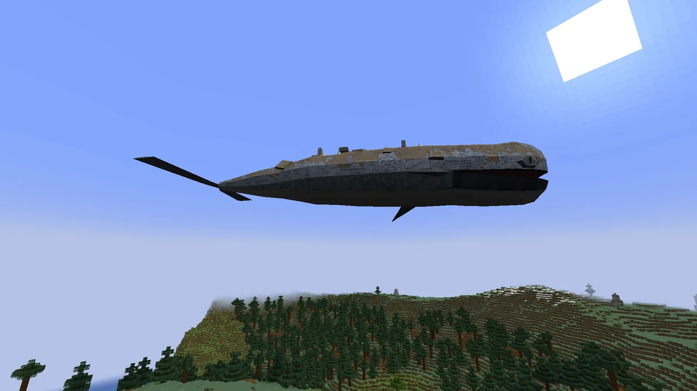
THE JOURNEY
どんな旅か
物語は巨神 1 体につき一つの章。島から始まり、四体の巨神、地の底、月、雲の上へと進みます。
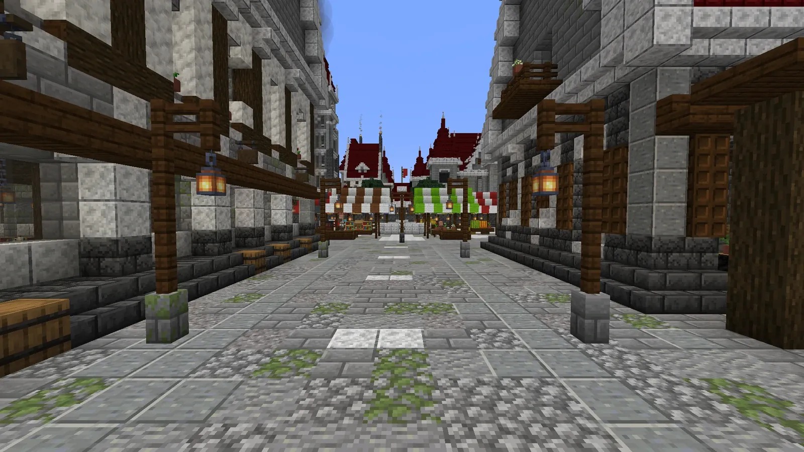
序章空の影はじまりの島でジョブを選び、渡し舟で鐘の都へ。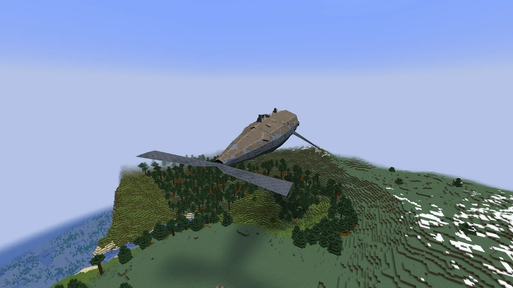
一章岩鯨空を泳ぐ鯨。垂れた鎖をのぼって背へ。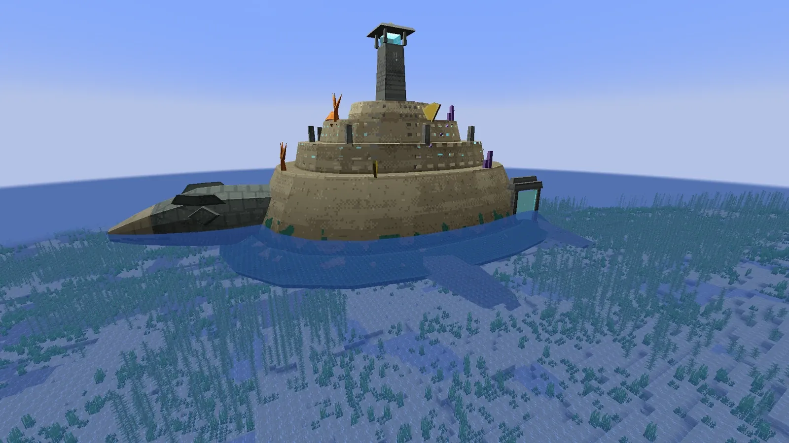
二章潮殻海をゆく巨神。舟で近づき、甲羅の上へ。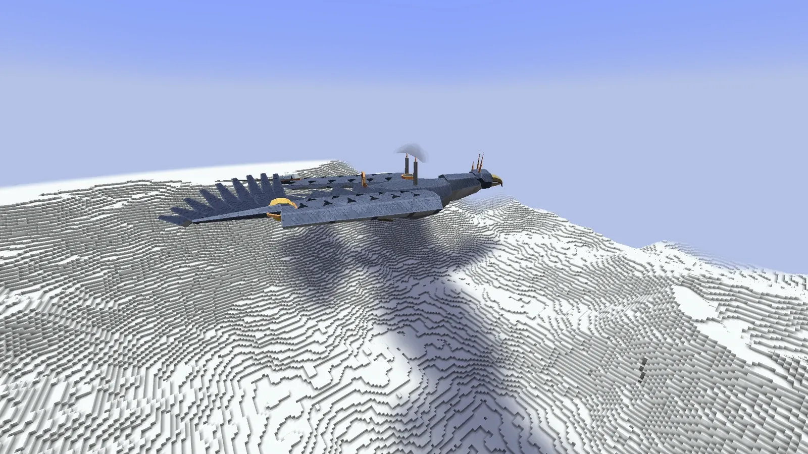
三章雷翼嵐の峰に降りる大鷲。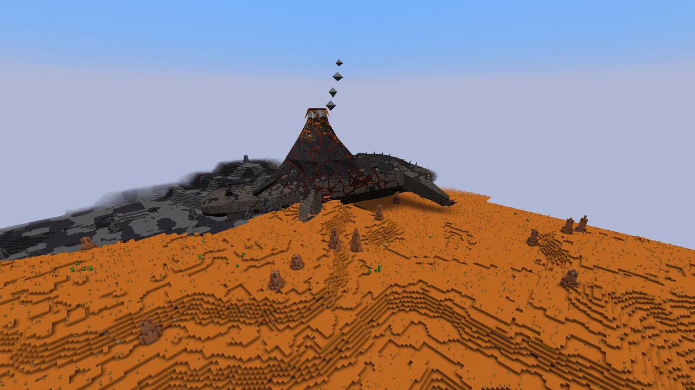
四章余燼地の中を泳ぐ火の山。眠ったら口から入る。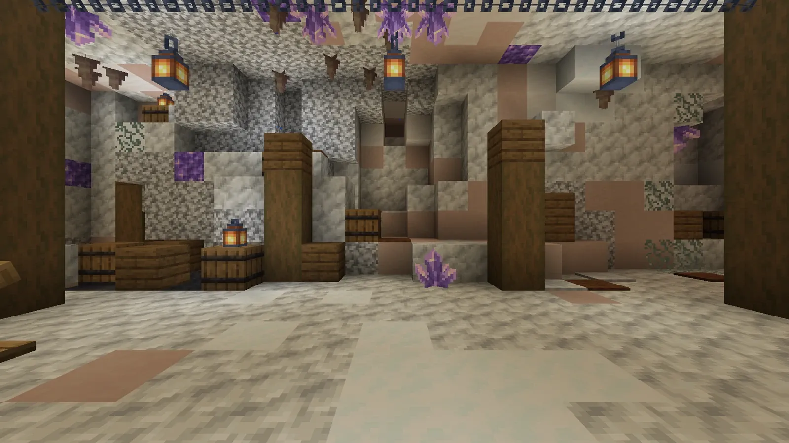
五章深淵都の下の大坑道から、世界の底へ。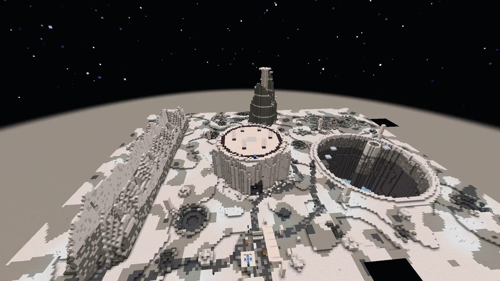
六章月近づいてくる月へ渡り、巻き戻りのわけを知る。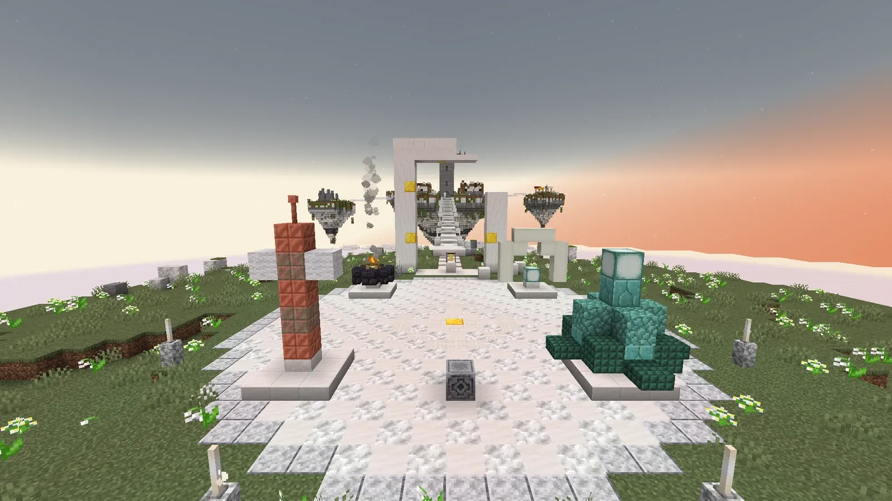
終章雲海雲の上で巡礼者と向き合う。結末は三つ。
物語のあとも、あいだの塔・深淵の深み・月の位相の挑戦・巡礼の試し・裏ボスが続きます（物語のあと）。
WHAT YOU DO
この mod でできること
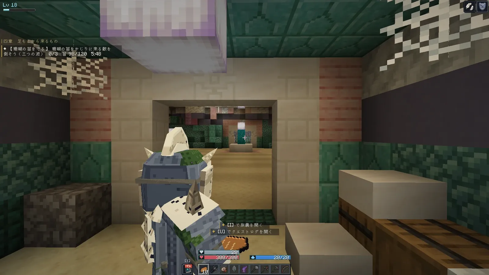
巨神の背を攻める
背中は「歩・智・闘」の三つの部屋、中ボス、心臓の順に進む戦いの場です。一人でも、6 人までのパーティーでも挑めます。心臓は構えと隙を読んで止めます。
くわしく →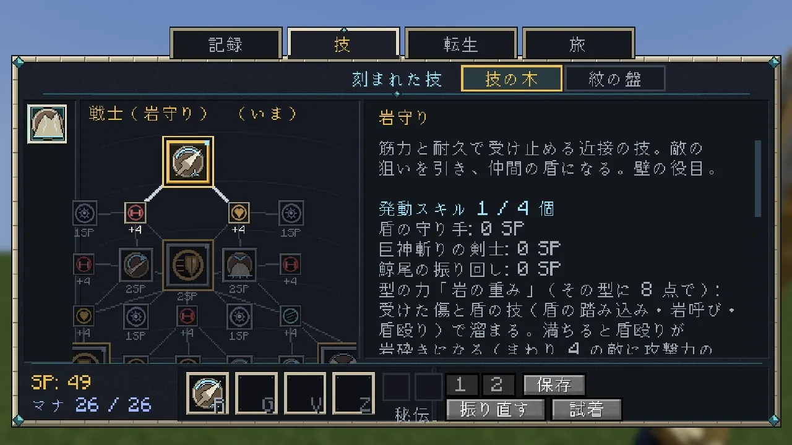
6 つのジョブとスキルツリー
戦士・鍛冶師・魔法使い・弓使い・暗殺者・呪術師。ジョブごとに三つの型を持つスキルツリーがあり、使うスキルは 4 つまで選びます。
くわしく →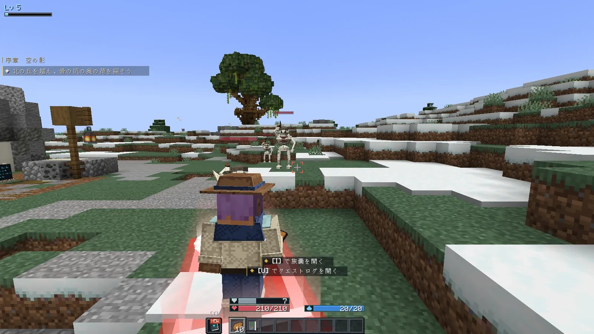
肩越しで戦う
F5 でこの mod の肩越し視点になります。照準の先へ当たり、敵の大技は赤い予兆を見てから避けられます。
くわしく →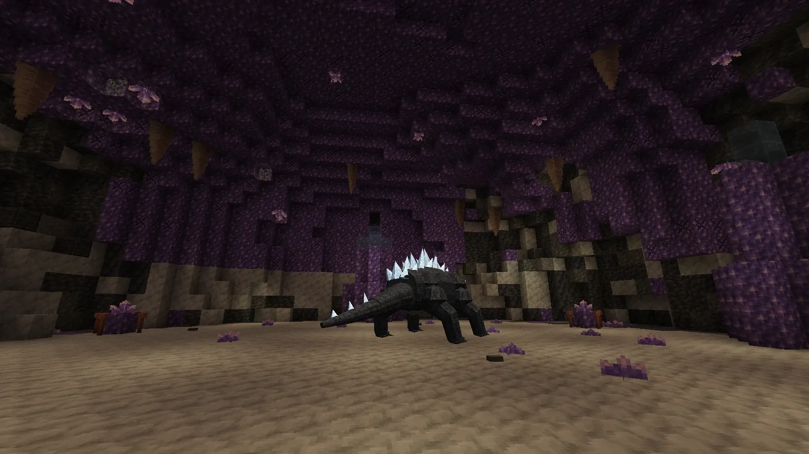
ダンジョンとあいだの塔
大陸の地下にダンジョンが 4 つ。物語のあとは、橋の上の大きな主と戦う「あいだの塔」が待っています。
くわしく →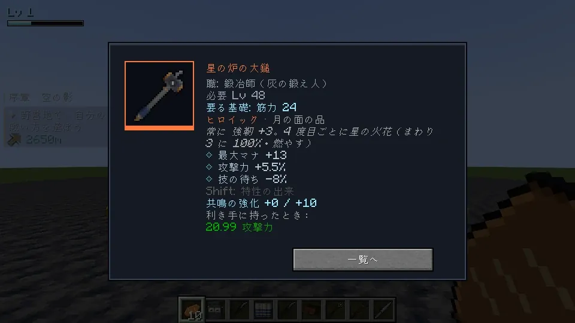
装備を集める
敵は封印の箱を落とし、町の封切り師が開けてくれます。装備はすり減りません。いちばん上の神器には大きな能力が付きます。
くわしく →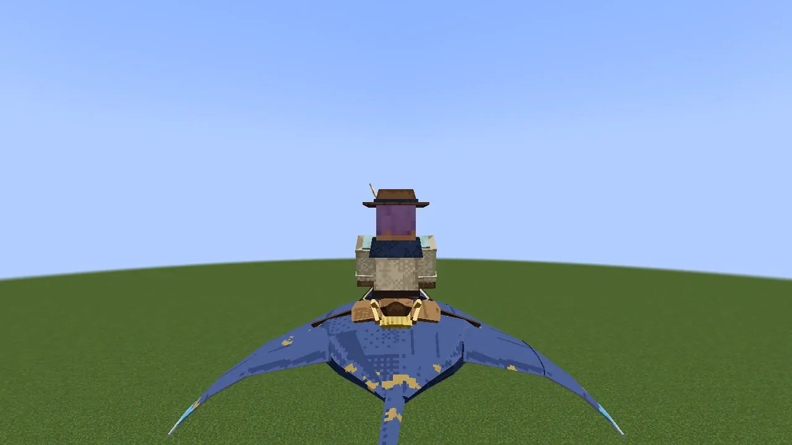
大陸を旅し、仲間と暮らす
鐘の都と 4 つの町、旅の地図、乗り物（最後は空を飛ぶ空鱏）。釣り、ギルド、取引所もあります。
くわしく →SIX JOBS
六つのジョブ
最初のジョブは島の祠で選び、あとから町のジョブの間で替えられます。選んで、くわしく見てください。
HOW IT PLAYS
このゲームの決まり
Minecraft の見た目をした RPG です。ふだんの Minecraft とは遊び方が違います。
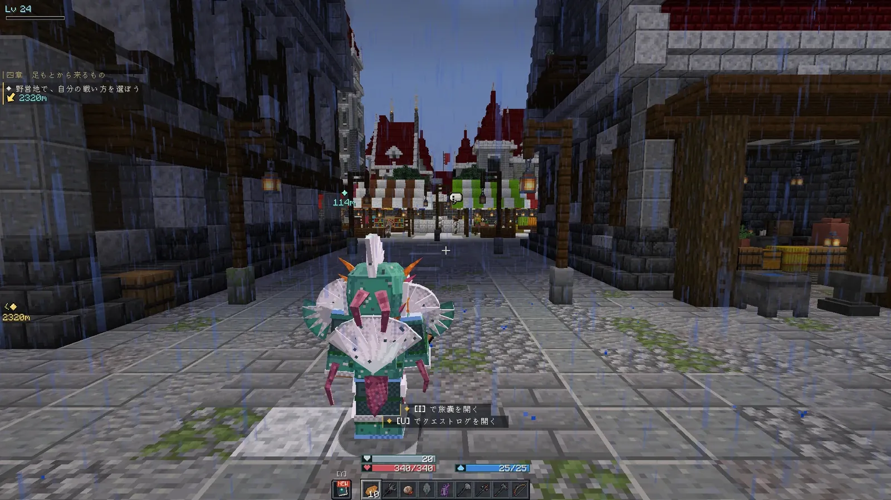
- 世界は手で描いた一枚の大陸です。新しい世界の種類「天と淵の大陸」で始めます。
- アドベンチャーモードで遊ぶ RPG です。ブロックは掘れず、作業台で物は作りません。
- 敵はこの mod の敵だけです。土地ごとに強さが決まっていて、ときどき名のある強敵が現れます。
- 装備はすり減りません。倒れても、身につけた装備と大事な品は手もとに残ります。
- 目的は画面の左上の「目的のバー」と、U のクエストログにいつも出ています。
- 1NeoForge 1.21.1 を入れるMinecraft Java 版 1.21.1 に、NeoForge のインストーラーで入れます。
- 2mods フォルダに 2 つ置くGeckoLib（1.21.1 用）と、この mod の jar。
- 3「天と淵の大陸」で世界を作る世界の種類をこれにして始めると、短い語りのあと島で目が覚めます。